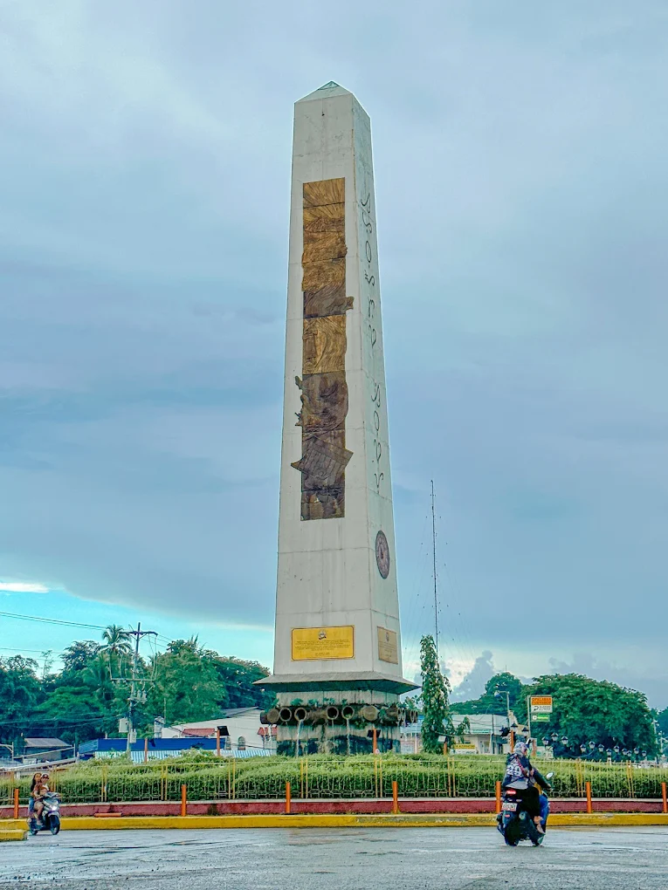
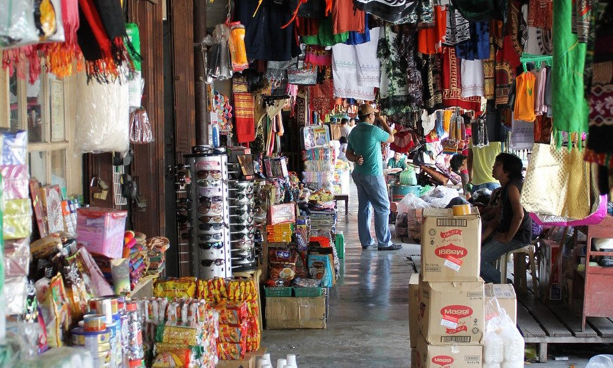

Overview
Urban tourism in Zamboanga Sibugay focuses on the vibrant and developing capital municipality of Ipil. It is the administrative, commercial, and cultural hub of the province. Here, visitors can experience the "metropolitan" side of Sibugay, defined by a distinct mix of government heritage buildings, bustling open-air markets, and a lively culinary scene.
Ipil is the gateway to the province, serving as the perfect launchpad for exploring inland nature or embarking on food tours. Its clean, planned streets and accessible public squares make it an enjoyable urban destination in Western Mindanao.
Popular Urban Destinations
The Ipil Rotunda Obelisk

Standing tall at the heart of the provincial capital, the **Ipil Rotunda Obelisk** is the defining landmark of Zamboanga Sibugay. This 10-story tower is not just a monument but a thriving center of community life. In the evenings, the area transforms into a vibrant night market with food stalls, live music, and colorful lights, offering the ultimate urban experience in the province.
Zamboanga Sibugay Provincial Capitol

The Zamboanga Sibugay Provincial Capitol, located in Ipil, serves as the main government center of the province and symbolizes its political and cultural identity. It is not only an administrative building but also a venue for official ceremonies, public gatherings, and provincial events that showcase local traditions and unity.
Canelar Barter Trade Center

For the ultimate "urban barter" experience in the region, make the journey to the legendary **Canelar Barter Trade Center**. Located in neighboring Zamboanga City, this historic hub is a maze of stalls overflowing with colorful Indonesian batiks, Malaysian textiles, and unique duty-free goods. Exploring Canelar is a sensory overload of sights, sounds, and scents, offering a deep immersion into the ancient trading culture that connects Mindanao to its Southeast Asian neighbors.